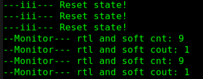
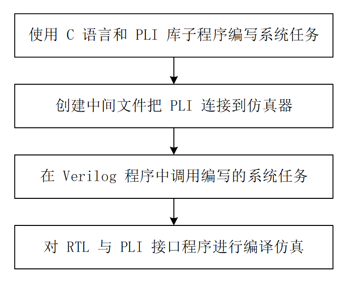
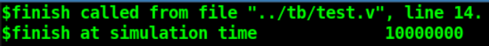

9.2 Verilog 可综合性设计
Verilogは主にデジタル回路設計の記述に使用されますが、すべての記述方法が実際のハードウェア回路に合成できるわけではありません。例えば、シミュレーション検証に使用される一部のキーワードは、シミュレーション検証言語に属します...

9.1 Verilog 逻辑综合
本チュートリアルでは、「総合」という言葉がよく言及されます。あるいは、一部のロジックは実際の回路に総合できない、あるいは一部のロジック設計を総合した後の回路には安全上の問題があるかもしれません。本章では、ロジックについて簡単に紹介します...
8.5 Verilog ACC 子程序列表
サブルーチンの本来の趣を保ち、拙劣な翻訳レベルによる品質低下を避けるため、すべてのサブルーチン一覧は英語の説明をそのまま保持しています。ここではすべてのサブルーチンを検証したわけではありません。バージョンや転記の問題により...

8.4 Verilog ACC 子程序
機能特性 ACC サブルーチンが主に実行する機能は次のとおりです： 内部データ構造から特定オブジェクトの関連情報を読み取る 特定オブジェクトの関連情報を内部データ構造に書き込む ACC サブルーチン...
8.3 Verilog TF 子程序列表
サブルーチンの本来の趣を保ち、拙劣な翻訳レベルによる品質低下を避けるため、すべてのサブルーチン一覧は英語の説明をそのまま保持しています。使用時には、対応するタイプのサブルーチンを注意深く研究することをお勧めします。ここではすべての...

8.2 Verilog TF 子程序
機能特性 TF (task/function) サブルーチンは主に、Verilog とユーザー C プログラムの境界における双方向のデータ転送に使用されます。 TF サブルーチンは常に tf_ をプレフィックスとし、ヘッダーファイルに定義されています...

8.1 Verilog PLI 简介
デジタル設計を行う際、特別な状況にしばしば遭遇します。Verilog のタスクと関数ではシミュレーションのニーズを満たせない場合があり、独自のシステムタスクや関数を定義する必要があります。プログラミング言語インターフェース (PLI, P...

7.5 Verilog 其他系统任务
シミュレーション制御：$finish, $stop システムタスク呼び出し形式 タスク説明 シミュレーション終了 $finish( type ); シミュレーションを終了します。パラメータ type で、シミュレーション終了時に情報を出力するかどうかを選択できます。 type=0: ...

7.4 Verilog 实数整数转换
キーワード：定点数、浮動小数点数、$realtobits、$bitstoreal 本節では、実数と整数の間で相互変換する関数：$realtobits、$bitstorealを主に紹介し、同時に real ... についても説明します。

7.3 Verilog 随机数及概率分布
乱数 Verilog では、システムタスク $random(seed) を使用して乱数を生成します。seed は乱数のシードです。 seed の値が異なると、生成される乱数も異なります。seed が同じ場合、生成される...